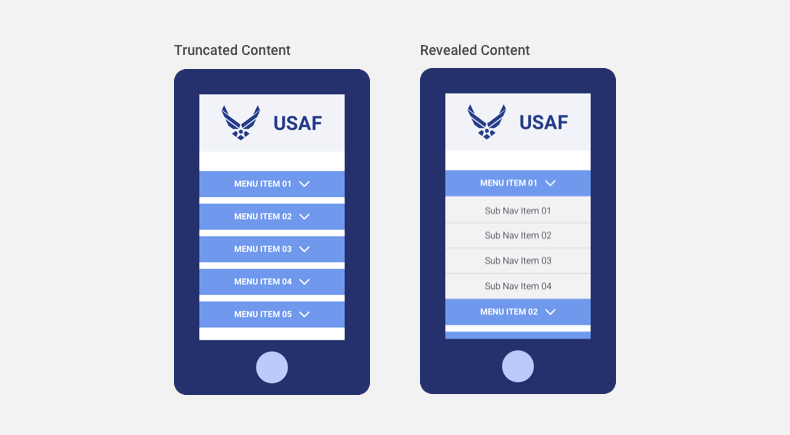

4.2 General Interface Guidelines
Designing the User Interface
As the visualized part of the user experience, a thoughtfully designed user interface (UI) is critical to helping end users quickly and efficiently complete tasks. It’s said that “good design is 99% invisible,” and so should be your choices. When users notice clashing colors, illegible text, or misplaced buttons, they grow frustrated and worse.
Design for the User
Design is not a purely aesthetic task. Before placing a pixel, orient yourself with any UX and audience findings. You should be able to answer the following questions:
- What’s your application’s ultimate goal? What tasks do you want users to accomplish?
- Who is going to use your application? What do they want or need?
- What are the benchmarks for their success?
- On what devices will your application be used? In what context (remote, at a workstation, etc.) will they use it?
Design for Interaction
Digital platforms are not passive environments. While some principles of print design hold true, these pages, platforms, and applications have a fundamentally different relationship with the user. The user is expected to affect the application, to interact and communicate their intent. In return, the platform should be a conversation with the user.
- Guide the Eye. Users are drawn toward heavier elements of a page, and can wander if there are no distinctions in visual weight between elements. Critical components or calls-to-action should be larger and bolder. Less critical components – such as supplementary text – can be smaller and lower contrast. Also, eye tracking studies indicate that people generally scan pages in an F pattern (described in section 4.6), which is a useful starting point.
- Focus on Task Completion. A design should perform it’s intended task and be beautiful, and is a failure if it’s just beautiful. Each design decision should serve the function of the page, and evaluate decorative elements (like brand images) on their contribution to task completion.
- Design Light. Bandwidth and download speeds plague users in a need-it-now world. As a designer, you can increase their working speed by minimizing the file size of elements in your design. Text, solid colors, and default browser elements are “light” and can be used liberally. Images (and animations in particular) should only be used when necessary to serve the function of the page.
- Provide Proactive and Immediate Feedback. Obvious labels, content categorization, and color cues create a proactive shorthand for users. Button hover states and dynamic rollovers allow them to “peek behind the curtain” and know better what comes after their click (see Buttons & Controls).
- Progressively Reveal. Only display – through truncated content and other components – what the user absolutely needs to know in order to make their next, informed choice. There is a good reason the web is so rife with “Learn More” buttons – this saves on both page weight and cognitive load.

- Differentiate Clicks/Taps, Hover, and Scroll. Every time the user interacts with the application, they tell us something about their intent. While a hover is exploratory, a click is committal. Scrolling down a page says “I haven’t found what I’m looking for.” Consider how your design choices respond to the nuanced behaviors of
the user.
Reference